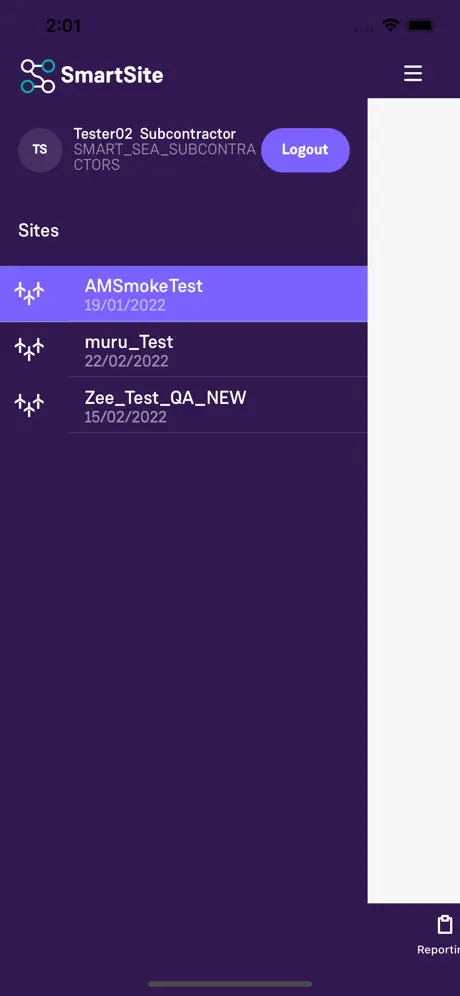
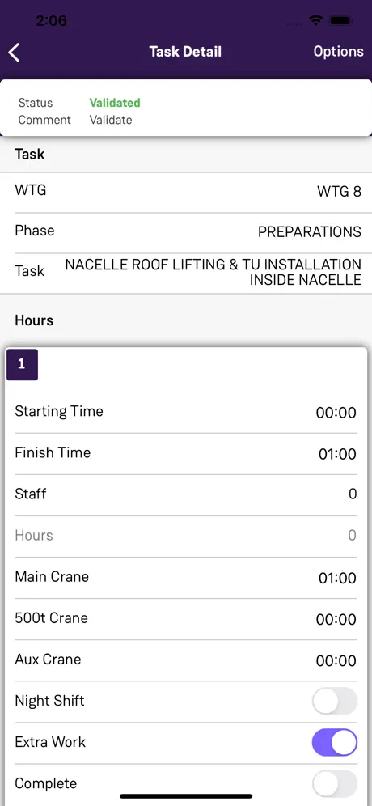

Offline-first labour reporting for wind farm construction
SmartSite gives Siemens Gamesa real-time visibility over wind farm construction — activity reporting, progress tracking, deviation capture and lead-time comparison across regions. The people producing that data are subcontractor crews standing at the base of a turbine, frequently with no usable network. Everything interesting about this build follows from that one fact.
On source code: SmartSite is a Siemens Gamesa product delivered through Infosys — the source is client IP and there is no public repository. The architecture description below is my own, written from scratch.
Context & Scope
Wind farms are built where the wind is, which is to say: on ridgelines, offshore approaches, open plains and other places chosen for their meteorology rather than their cellular coverage. The construction programme is long, the subcontractor mix changes across phases, and the whole commercial model depends on knowing what work actually happened, when, and where it deviated from plan.
SmartSite is the capture layer for that. Crews report activities and timesheets; supervisors track progress against the construction sequence and log deviations with cause; the organisation gets lead-time transparency and the ability to compare execution across regions. It shipped initially as an online product — and the field immediately made clear that an online-only reporting tool at a wind farm is a tool that gets filled in from memory in a hotel room three days later, which is exactly the data quality problem the product existed to solve.
What made it hard
- Offline was retrofitted into a live product, not designed in. The app was already deployed and in use. Adding durable offline capture meant changing the write path underneath users without breaking the online behaviour they depended on.
- Timesheets are money. A lost or duplicated timesheet is a subcontractor payment dispute. This is not a domain where "eventually consistent, probably" is acceptable — a crew needs to know their submission is safe the moment they tap save.
- The data shape is nested and editable. An activity contains multiple tasks; a task can carry multiple timeframes. All of it has to be creatable, editable and deletable offline, then reconciled — which is materially harder than queueing flat append-only events.
- Security compliance moved mid-flight. The product had to move from single-factor to multi-factor authentication to meet compliance requirements, on an app whose users are often offline and whose sessions have to survive that.
- Enterprise client delivery. Fixed release trains, client-side acceptance, and a long-lived Xamarin.Forms codebase serving a global operation.



App Store listing screenshots.
Architectural Blueprint
The governing rule: the local database is the system of record for the crew, and the network is an eventual detail. A timesheet save is a local transactional commit that returns immediately. Sync is a separate, explicitly user-visible act — the app shows what is pending and the user presses sync when they have signal. Making that boundary visible rather than magical was a deliberate product decision as much as a technical one.
Amber = the write path that must never lose a record. The sync step is deliberately explicit — a crew that can see a pending count trusts the app; one that can't, doesn't.
Decisions worth defending
- Intents, not dirty rows. Offline edits are recorded as an ordered journal of create / edit / delete intents carrying a client-generated key, rather than mutating a row and flagging it dirty. Deletion is the case that breaks the naive approach — a row you deleted locally has nothing left to carry the "I was deleted" flag, so tombstones and an intent log are the only honest way to reconcile it.
- Idempotency by client key. Because every intent carries a stable key generated on the device, a retried batch after a mid-flight drop is a no-op server-side. Duplicate submission — the most damaging failure mode in a labour-reporting product — is eliminated by construction rather than by careful retry logic.
- Identical validation on both paths. The domain rules run the same whether the device is online or offline. If validation only ran server-side, a crew could fill in a full shift offline and have it rejected on sync, at which point they no longer remember the detail. Rejecting at the point of entry is the only version that respects the user's time.
- Explicit sync over silent background sync. Contrarian, and deliberate. In a payment-relevant workflow, a visible pending count and a user-pressed sync button build trust that a silent background process does not. The crew knows exactly what is safe and what is not.
- MFA that does not punish offline users. Moving from single-factor to multi-factor on an app used in dead zones meant token lifetimes and re-authentication behaviour had to be designed so that a session expiring in the field never puts locally committed work at risk. Authentication state and data durability are separate concerns and had to stay that way.
Engineering Breakthrough
Retrofitting durability into a shipped product
The hard part was not writing an offline layer. It was inserting one beneath a live application whose users were mid-programme, without a rewrite freeze and without a migration that could lose in-flight data.
- Route every write through one seam first. Before any offline behaviour existed, the scattered calls that wrote timesheet data were consolidated behind a single repository interface. That refactor shipped on its own, changed no behaviour, and was independently revertible — and it turned "add offline support" from a cross-cutting rewrite into a change with one implementation site.
- Make the local store authoritative, then make sync catch up. Once the seam existed, the local database became the write target and the network became a downstream consumer of the journal. The online path did not disappear; it became the fast case of the same path.
- Ship the nested cases deliberately. Multiple tasks per activity and multiple timeframes per task were introduced alongside the offline work because the two interact — the reconciliation model has to handle a child record created offline under a parent that itself was created offline and has no server identity yet. Client-generated keys are what make that resolvable.
- Prove it with scripted network faults. A fake connectivity provider driving clean drops, flapping cells, high-latency lossy links and mid-flight disconnects, plus a process-kill test during a write transaction. "It works offline" is a claim that needs a test suite behind it, otherwise it is a hope.
Retrofitting offline support is mostly a refactoring problem wearing a distributed-systems costume. Find the write path, collapse it to one seam, ship that seam with no behaviour change, and only then change what sits behind it. Teams that skip the boring first step end up doing the distributed-systems part in a dozen places at once.
Scope & Impact
- Offline
- Full create, edit and delete of timesheets with no connectivity, reconciled on explicit sync — shipped into a live, already-deployed product.
- MFA
- Authentication upgraded from single-factor to multi-factor for security compliance, without compromising offline usability.
- Global
- Used across Siemens Gamesa wind farm construction sites, with cross-region execution comparison in the reporting layer.
- {{m_b_offline}}
- Share of timesheets captured while offline — an estimate from the field, not an instrumented figure. Ask me how I arrived at it.
The offline and MFA milestones are visible in the app's public release history. The last tile is my own estimate and is labelled as such.